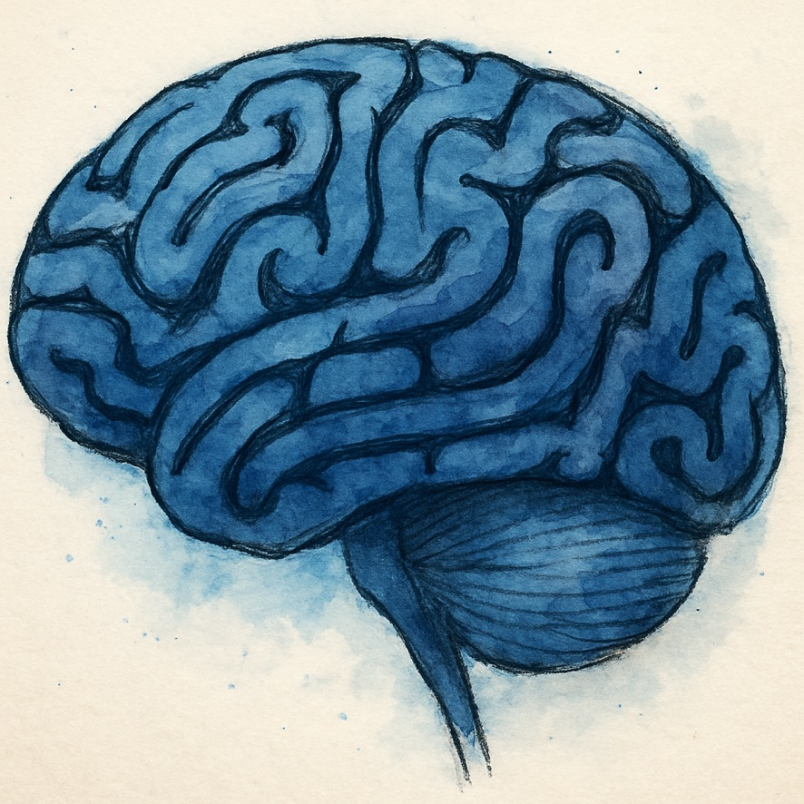

Let your eyes rest on one circle. When the cube seems to shift, click the button.
Keep your gaze on the cube — you don't need to look at the button.

Let your eyes rest on one circle. When the cube seems to shift, click the button.
Keep your gaze on the cube — you don't need to look at the button.
This is what learning feels like. It is easy. It is fun. It is wonderful.
Back to Curious WoodsWelcome back. Ready to practice?